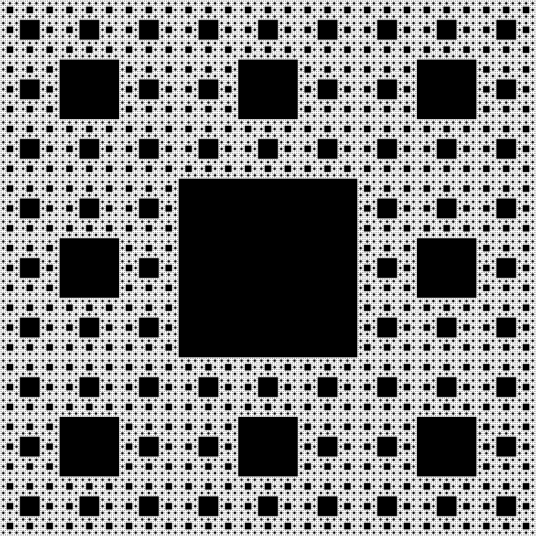
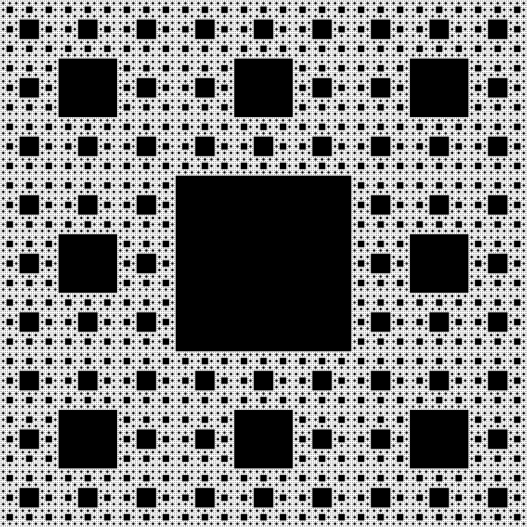

What are fractals?
Fractals are mathematical objects which display detail in infinitely small sections. Many fractals, including the ones
created in this site's fractal generation program, exhibit self-similarity: If you take a small part of the fractal, and
zoom in as far as you want, that small part will contain a complete copy of the whole image.
The history of fractals ranges from primarily theoretical studies, to modern day computer graphics. The first observerd instances
of fractal scaling were in some African societies, whose villages were composed of circular buildings arranged in circular
patterns. As a branch of mathematics, the field began taking shape in the 17th century, but it wasn't until centuries later,
with the work of Georg Cantor, that the discipline truly began to enter the public consciousness.
As the field has grown, so too has the number of canonical examples. Noandays, there are many named fractals: Mandelbrot sets,
Sierpinski carpet, Koch snowflakes, and Julia sets, to name a few.
Beautiful and in many ways mysterious, fractals have captured the attention of mathematicians and academics for centuries. Try making your
own!


 
